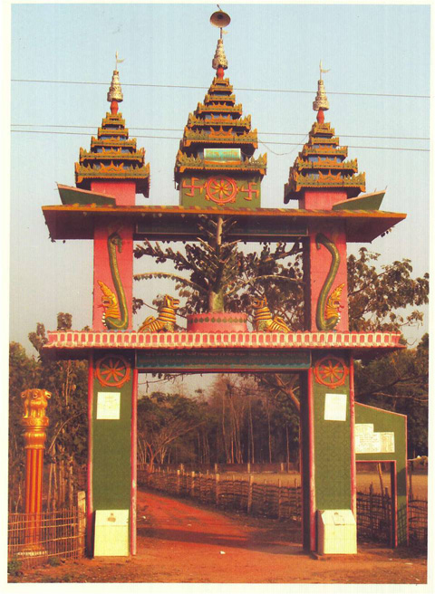
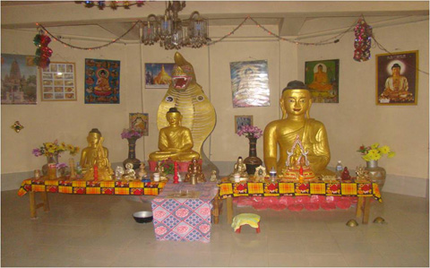

বৈচিত্র্যময় খাগড়াছড়ি
খাগড়াছড়ি জেলার মানিকছড়ি উপজেলার তিনটহরী নামক স্থানে তিনটহরী উচ্চ বিদ্যালয়ের পাশে আন্তর্জাতিক ভাবনা কেন্দ্রটি অবস্থিত।

বিভিন্ন আকারের বুদ্ধ মূর্তি, বিহারের ভিতর একটি উপগুপ্ত বৌদ্ধ মন্দির, বৌদ্ধ ভিক্ষুদের ভাবনা কক্ষ।

৩রা সেপ্টেম্বর, ১৯৯৮
চট্টগ্রাম-খাগড়াছড়ি মহাসড়কের পাশে তিনটহরী উচ্চ বিদ্যালয় এসে ভাবনা কেন্দ্রে যেতে হয়।